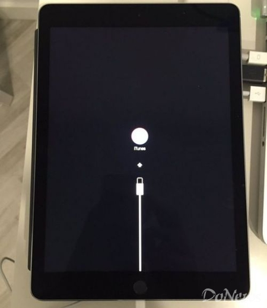

苹果声称，“我们正在修复一个导致少数iPad在升级iOS最新版本系统时遇到问题的bug，我们将尽快推送一个修复性更新”。
本周早些时候苹果发布了iOS 9.3.2系统更新，称修复了大量漏洞。但随后陆续有部分9.7英寸iPad Pro用户反映，他们的iPad Pro在更新到最新系统后“变砖”，屏幕中出现“Error 56”错误，并且表示恢复也无法解决问题。
该问题刚被曝出，苹果就承认该了问题的存在，并表示如果通过iTunes无法完成恢复，用户可以联系苹果官方售后解决。不过，苹果并没有表示到底何时才能修复漏洞，但苹果解释称，因为系统中的一些bug问题，目前工程师正在积极解决，很快会推出修复性更新。
据了解，苹果昨日撤下了iOS 9.3.2升级补丁。目前没有安装iOS 9.3.2升级补丁的9.7寸iPad Pro用户现在已经无法升级，系统会显示iOS 9.3.1是最新的操作系统。
除此之外，9.7英寸版本iPad Pro还曝出开发者无法注册设备的问题。